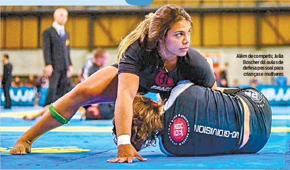

Biografia de Julia Boscher
Julia Boscher nasceu em 20 de novembro de 1995, no Rio de Janeiro, Brasil.
Enquanto crescia, Julia era uma criança muito ativa, praticando vários esportes competitivos, embora o handebol fosse o lugar onde ela brilhava mais. Seu talento despertou o interesse de um dos principais times de handebol do Brasil - o Fluminense, embora o longo trajeto diário tenha sido demais para os pais de Boscher darem continuidade à sua carreira no clube.
Aos 13 anos, Julia acrescentou o muay thai à sua rotina esportiva, uma arte marcial que ela praticou brevemente antes de ingressar no jiu-jitsu. Foi, de fato, por meio da arte marcante que Boscher descobriu o jiu-jitsu, já que um de seus parceiros de treinamento de boxe tailandês costumava reverenciar o grappling como o melhor estilo de combate. Empolgada com os elogios ao jiu-jitsu dessa amiga, Julia pediu aos pais que ingressassem em uma academia de BJJ,pedido consentido pelo pai, sob a regra de que ela só poderia treinar em uma classe feminina.
No início da adolescência, Julia ingressou na Soul Fighters Academy e na sala de aula de Alexandre Salgado. Salgado se tornou uma figura instrumental na ascensão de Boscher no cenário competitivo de grappling. Salgado pressionou Julia para competir desde o início, com a jovem fazendo sua estreia em torneios com 1 mês de experiência em treinamentos. Sua habilidade natural para o grappling era realmente especial, tanto que ela conquistou a faixa azul em apenas 3 meses de treinamento.
Tanto Salgado quanto Hugo Marques foram as principais fontes de inspiração de Julia durante sua evolução no jiu-jitsu. Mesmo depois de o técnico Alexandre se mudar para Abu Dhabi e a instrução de Boscher ser assumida por Leandro Escobar , Salgado manteve um vínculo estreito com seu ex-aluno, estando sempre presente em avaliações e outros eventos memoráveis.
Na faixa-marrom, Julia passou a treinar com mais frequência com Hugo Marques , e foi ele, além de Alexandre Salgado, quem a promoveu à faixa-preta em julho de 2019.
Ao longo de sua carreira no grappling, Julia Boscher enfatizou continuamente a importância de mostrar apoio ao movimento feminino no jiu-jitsu, na tentativa de se libertar do pesado domínio dos homens no discurso do grappling. Era de sua compreensão que, por meio de seu trabalho árduo, poderia provar para outras mulheres que qualquer uma delas também poderia fazer carreira no esporte. Liderando pelo exemplo, ela pressionou pelo crescimento contínuo da representação feminina no esporte / arte marcial.
Entrevista de Julia Boscher